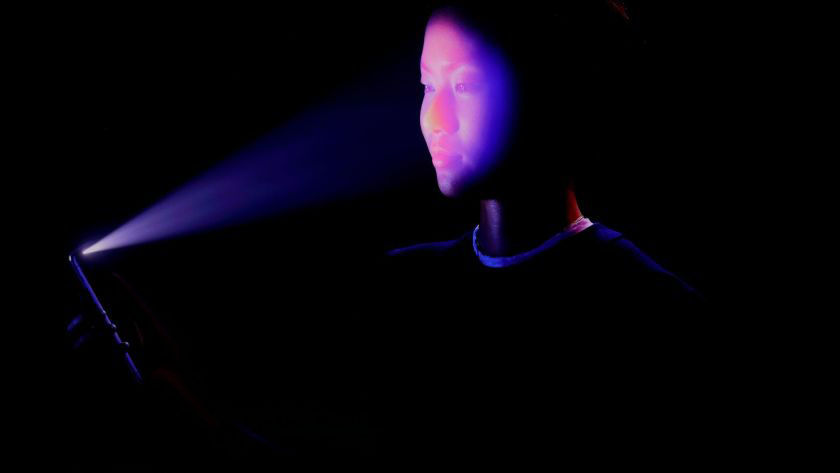
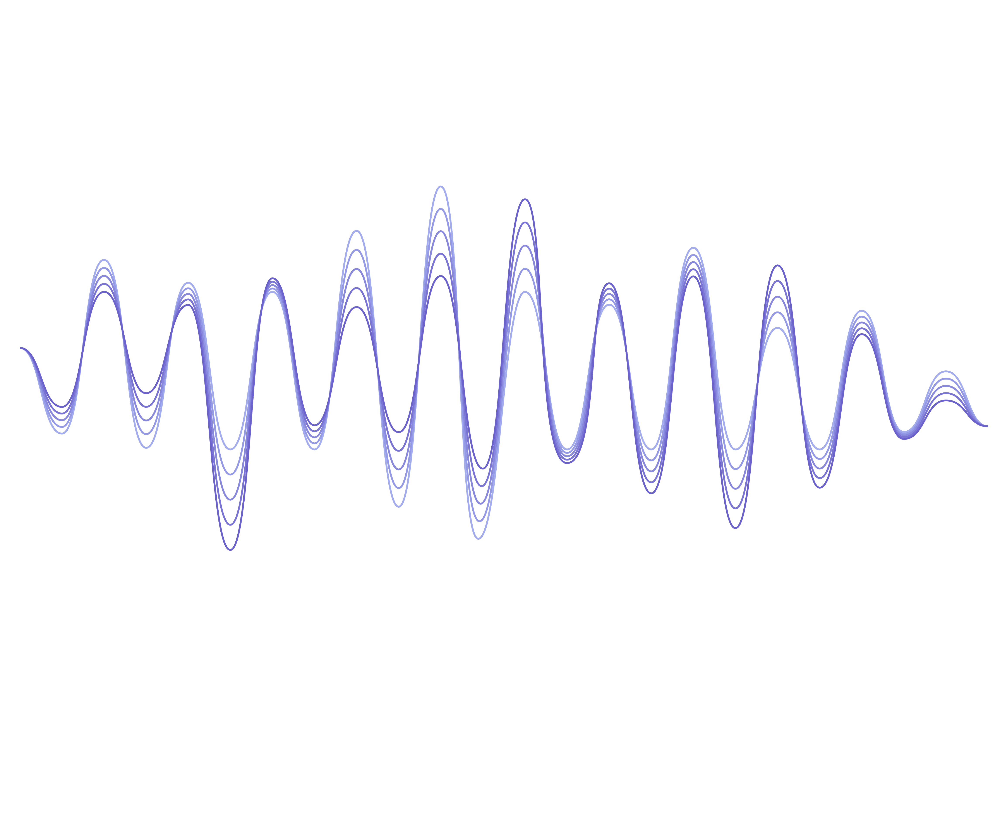

Valtech is exploring new prototypes for touchless interactive experiences.
To navigate the presentation, use your hands to display 👍 to move forward and ✌️ to move back.
The health crisis is making the world completely rethink the way we interact with technology.
Everything from in-store experiences, to self-service checkouts, to theme parks are now feeling a big push
toward touchless interaction.

Touchless offers the potential for not only safer experiences but also innovative ways to interact.
This technology relies on open-source machine learning models to recognize specific hand gestures.
Other options for touchless experiences could include voice recognition.

Or possibly using a personal smartphone as a type of remote control.